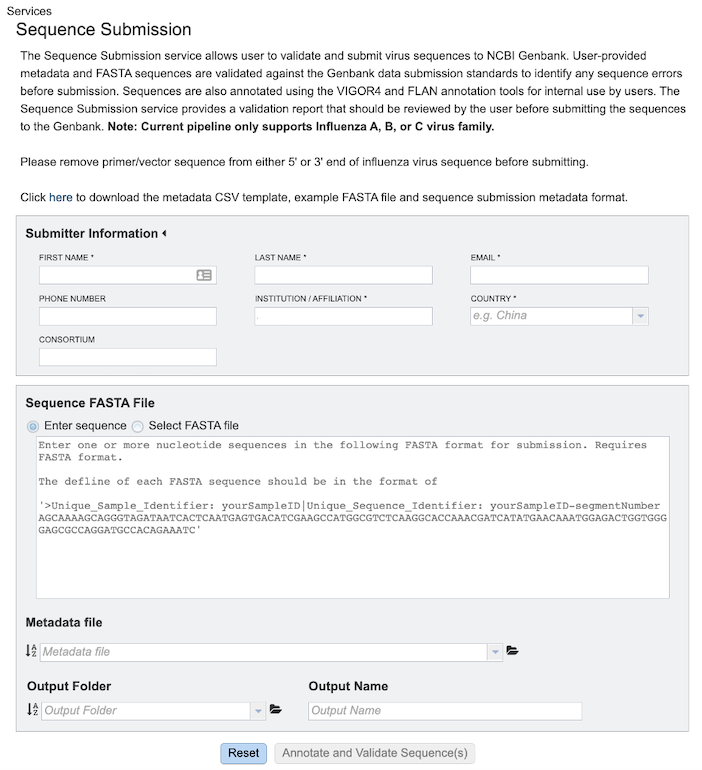
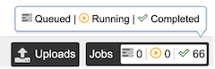
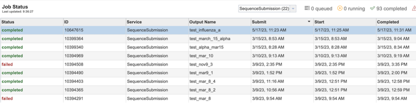
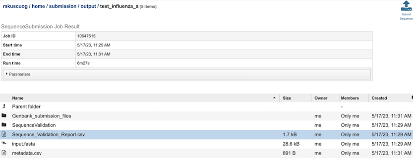

Sequence Submission Service¶
Revised: February 22, 2024
Overview¶
The Sequence Submission service allows user to validate and submit virus sequences to NCBI Genbank. User-provided metadata and FASTA sequences are validated against the Genbank data submission standards to identify any sequence errors before submission. Sequences are also annotated using the VIGOR4 and FLAN annotation tools for internal use by users. The Sequence Submission service provides a validation report that should be reviewed by the user before submitting the sequences to the Genbank.
Note: Current pipeline only supports Influenza A, B, or C virus family.
See also¶
Using the Sequence Submission Service¶
The Seqeuence Submission submenu option under the “TOOLS & SERVICES” main menu (Genomics category) opens the Sequence Submission Service input form. Note: You must be logged into BV-BRC to use this service.

Parameters¶
Below is a screenshot of the Sequence Submission input form, as well as a summary of customizable parameters.

Submitter Information¶
First Name: The first name of the submitter (Required)
Last Name: The last name of the submitter (Required)
Email: The email id of the submitter (Required)
Institution/Affiliation: The institution/affiliation information of the submitter (Required)
Country: The country information of the submitter (Required)
Phone Number: The phone number of the submitter
Consortium: The consortium information of the submitter
Sequence FASTA File¶
Enter Sequence: Paste the custom sequence in FASTA format.
Select FASTA File: Choose FASTA file that has been uploaded to the Workspace.
Metadata File¶
Choose Metadata file (CSV Format) that has been uploaded to the Workspace.
Output Folder¶
Folder in the Workspace where you want the results stored.
Output Name¶
Name you provide to identify the results in the Workspace.
Output Results¶
Clicking on the Jobs indicator at the bottom of the BV-BRC page open the Jobs Status page that displays all current and previous service jobs and their status.

Once the job has completed, selecting the job by clicking on it and clicking the “View” button on the green vertical Action Bar on the right-hand side of the page displays the results files (red box).

Results Page¶
The results page will consist of a header describing the job and a list of output files, as shown below.

The Sequence Submission Service generates several folders and files that are deposited in the Private Workspace in the designated Output Folder. These include:
input.fasta - The fasta file that was submitted
metadata.csv - A comma-separated file containing the metadata about the fasta
Sequence_Validation_Report.csv - A comma separated value file of validation results for all the sequences allowing users to review segment, serotype, status and messages determined by VIGOR4 and FLAN for each sequence identifier
submission.xml – an xml file for identifying the submission
submission.zip – a compressed file that includes all the required submission files
submit.ready - a submission ready flag for GenBank
.aln - alignment of predicted protein(s) to reference, and reference protein to genome
.cds - fasta file of predicted CDSs
.gff3 - lists all the features of the genome in General Feature Format (GFF3 is the most recent version of GFF)
.pep - a fasta file of predicted proteins
.rpt - a summary file of program results
.tbl - predicted features in GenBank tbl format
.report – a report file generated by FLAN